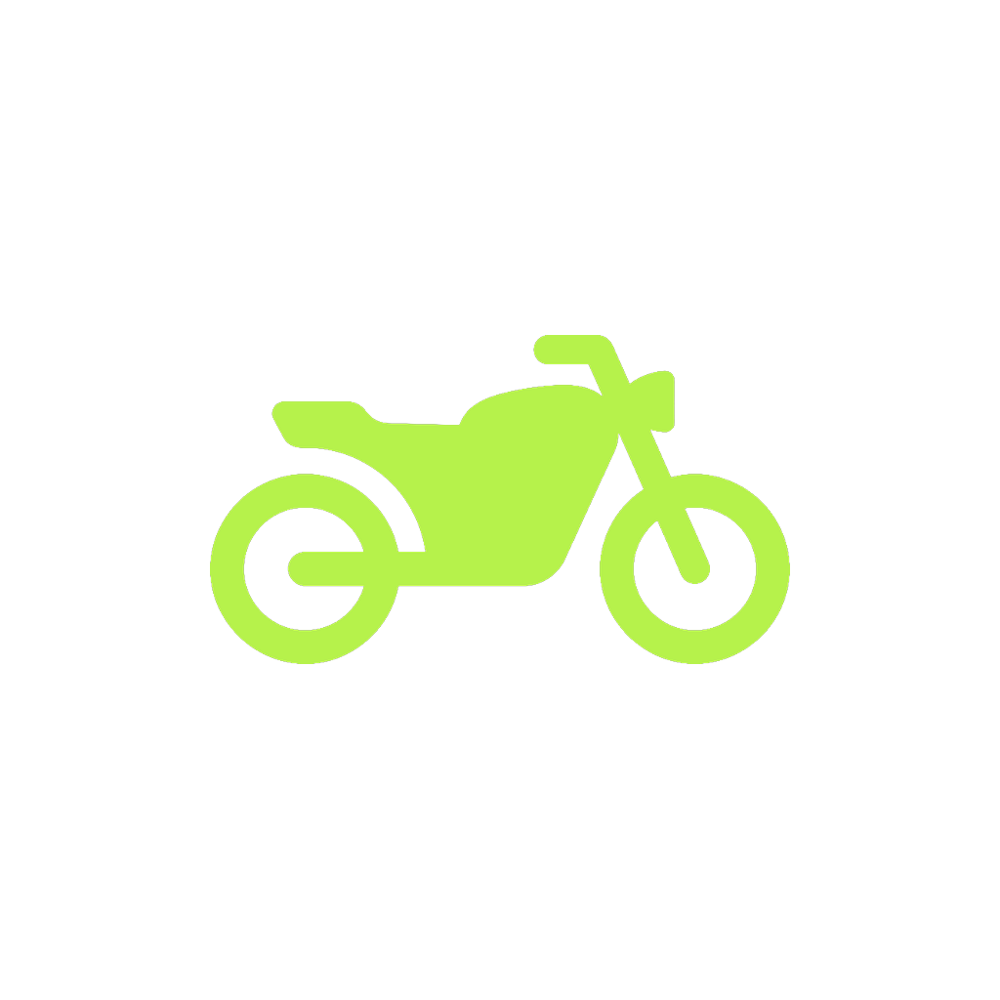

Your Smart Riding Companion
Real mileage measured the way it actually works. Rides recorded with their route. Papers kept safe and their expiry remembered. Built for Bangladesh, and it all works with no signal at all.
No account, no sign-up, no server. Everything lives on your phone, which is why all of it keeps working where the signal does not.
Measured between two full tanks, never from a single fill. Forget to log a refuel and it leaves that stretch out rather than showing you a number that is quietly wrong.
Distance, speed, moving time and your route on a map. Recording survives the app being closed mid-ride, and keeps going with the screen off.
Registration, tax token, insurance, fitness and licence, with photo or PDF scans. Reminded 30, 15, 7 and 1 days before anything expires, and on the day.
Talk to another rider over one phone's hotspot. Hands-free, so you never take a hand off the bars. No internet, no call charges, nothing recorded.
Spoken warnings for traffic cameras ahead, from verified locations only. They exist so you can check your speed — the limit and the signs still come first.
Cost per kilometre, spending by month, your best and worst tanks, and whether your mileage is going up or down.
Most apps divide the distance you rode by the fuel you last bought. That is not mileage — it only tells you the truth if the tank happened to be equally full both times. MotoPilot measures full tank to full tank.
| Fill | Odometer | Fuel | Type | What it means |
|---|---|---|---|---|
| #1 | 12,500 km | 5.0 L | Full | Baseline — no mileage yet |
| #2 | 12,620 km | 3.0 L | Partial | Counts towards spending, rolls forward |
| #3 | 12,750 km | 5.0 L | Full | 250 km ÷ 8.0 L = 31.25 km/L |
A partial fill says nothing about how full the tank now is, so it cannot close a measurement — but the money still counts. That is the difference between a figure you can act on and one that merely looks precise.
There is no account, no server and no analytics. Your fuel log, your rides, your routes and your documents are written to your own phone and stay there. Documents you mark private are encrypted on the device and opened only with your fingerprint.